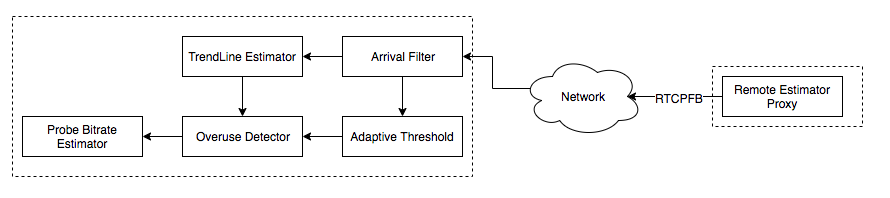
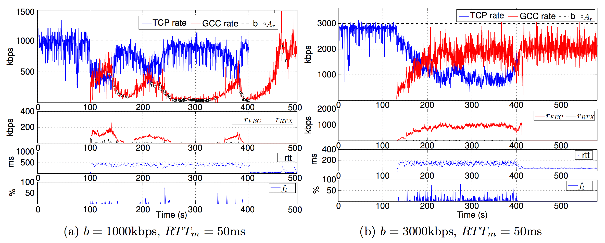

越过山丘，才发现无人等候。
WebRTC为了防止网络拥塞结合了Loss-based BWE和Delay-based BWE两种算法，其中Loss-based BWE算法较为复杂。WebRTC中提出了两种方案来处理Loss-based BWE：
- Recv-side Delay-based BWE：REMB-based GCC
- Send-side Delay-based BWE：TransportFB-based GCC
本文着重于两种方案的不同点，并分析二者的区别，进而确定在实际应用中应该选择哪一种方案。同时本文也会通过仿真结果，来给出GCC算法的性能分析。
本文按照其实现机制称：REMB-based GCC为REMB、TransportFB-based GCC为TCC。
BWE Evolution
带宽预估算法的演进经过两个阶段：
-
Loss-based BWE
-
Delay-based BWE
Loss-based BWE通过RTCP-RR报文来检测丢包率，然后根据丢包率来调整对应的带宽。Delay-based BWE通过分析包之间的延时来预测拥塞，在路由器丢弃数据包之前尝试降低带宽。
Loss-based BWE和Delay-based BWE的可行性都是基于网络路由器的特性：
- Loss-based BWE：当网络发生拥塞时，路由器缓冲区被填满，后续的数据包会被丢弃。
- Delay-based BWE：当网络开始出现拥塞时，路由器缓冲区数据逐渐增加，数据包之间的延迟变化加剧。
相对于Loss-based BWE，Delay-based BWE能够更早的发现网络的拥塞状况，进而提前调整码率，防止拥塞加重。
因此，在WebRTC中使用Loss-based BWE来适应丢包情况和探测带宽，而使用Delay-based BWE来提前发现网络拥塞，降低队列延迟，提高实时音视频通信的质量。
Send-side Delay-based BWE

Transport-CC将接收端的延迟信息通过RTCP-TCC反馈给发送端，然后在发送端进行Delay-based BWE。WebRTC通过以下两步来实现该方案：
- Transport wide sequence numbers header extension
x所有的RTP包额外的增加一个头部扩展项，该扩展项用来表示发送序列号。通过SDP来协商是否打开该扩展项：
1 | a=extmap:5 http://www.ietf.org/id/draft-holmer-rmcat-transport-wide-cc-extensions-01 |
- Transport Feedback
接收方向媒体发送方定期发送反馈，提供有关接收到的数据包的信息以及它们之间的延迟。反馈信息通过RTCP-Transport-FB反馈给发送端。通过SDP来协商是否启用：
1 | a=rtcp-fb:100 transport-cc |
RTCP-Transport-FB默认发送频率1time/100ms，同时其动态适应使用5％的可用带宽，最大频率值为1time/50ms、最小频率值为1time/250ms。以1time/100ms的频率发送，其最大需要耗费16kbps带宽。

Recv-side Delay-based BWE
Recv-side Delay-based BWE在接收端计算预估码率结果，并通过RTCP-REMB反馈给发送端。实现Recv-side Delay-based BWE需要两步：
- Transport with Absolute Send Time
绝对发送时间用于表示发送端发送该包的时间，在RTP报头的扩展中发送。需要在SDP中协商是否启用该扩展：
1 | a=extmap:3 http://www.webrtc.org/experiments/rtp-hdrext/abs-send-time |
- REMB Feedback
接收端通过RTCP-REMB反馈预估的码率值，需要在SDP中协商是否启动该反馈：
1 | a=rtcp-fb:<payload type> goog-remb |
在REMB方案中，其他厂商也给出了一些优化思路：
- WebRTC Gateway反馈的REMB码率结果需要综合考虑同一个会议中其他用户的下行带宽和丢包。
- 在REMB方案中引入TCC方案中的一些优点，譬如线性滤波器。
Comparison
方案对比
WebRTC实现了两种滤波器来进行延迟增长趋势的评估。Send-side Delay-based BWE采用Trendline Filter，而Recv-side Delay-based BWE采用了Kalman Filter。
效果对比
暂未发现效果对比的论文或博客，后续会自行研究对比。
Pros and Cons
TCC的优点在于无需依赖于两个端点——方便BWE算法测试，更易改进算法。发送端知道其使用了何种算法，进而按照场景的不同，切换BEW算法。来自Google Group的讨论：
- Easier to roll out improvements if the logic is located on one side and the other side is kept dumb.
- Having the logic on the send-side means you know more about what has been sent. For instance, you know if the source is very bursty (screencasts) which can help us make better decisions.
TCC的缺点在于浪费了一定的带宽，同时Firefox目前还不支持TCC。
REMB的优点在于码率的控制权在服务端（接收端），没有额外的带宽浪费。
REMB的缺点在于调试起来不方便，需要同时关注两个端，同时WebRTC已经不对REMB提供支持——这意味着当下的REMB实现版本可能存在不少BUG，同时BWE的新特性也不会加入到当前的REMB实现。
Google从Chrome55开始支持Send-side Delay-based BWE。查了下WebRTC的代码提交，REMB方案几乎没有实质性修改，而TCC针对性做了优化。
在采用TCC方案后，接收也可以利用REMB来通知发送端码率发送上限。
Which One?
从优缺点可以明显的看出，我们应该选择TCC。但这里还是要结合场景，如果服务端对码率的控制权十分重要，还是有必要使用REMB的，只是后续的BUG只能自己解了。
Performance
TCC和GCC本质上都是使用了GCC算法。GCC算法的设计目的是为了达到：
- 最大化利用可利用的带宽
- 带宽瓶颈时能够公平共享带宽（TCP流、GCC流）
- 最小化队列延迟
本节引用了多篇研究论文的结果，试图挖掘GCC方案的性能优点和漏洞。其中一些变量的含义如下：
Channel Utilization：
，R为预估码率 Good Channel Utilization：
，v为rtp发送码率 Loss Ratio：
Number of Delay-based Decrease Events：
，降低码率的REMB包数量
Single GCC Flow with Constant Avaliable Bandwidth
设置
从仿真结果可以看出：
- GCC预估码率从300kbps上升到2000kbps需要30s左右
- GCC预估码率在带宽阈值时波动严重，波动幅值最大可达1000Mpbs
- GCC预估码率会经常超过带宽阈值进而导致严重丢包
- GCC出现严重带宽时会大大提高FEC的比例，最大可达50%
- 当码率接近带宽上限时，RTT增大导致REMB发送频率增加，进而降低码率
设置
从仿真结果可以看出：
- 信道利用率几乎不受带宽和延迟影响，维持在80%左右
- 丢包率并不受RTR变化的影响，丢包率随着带宽的增加而增加，最高达到2.8%
- 随着带宽的增加，丢包率随着增加，进而导致FEC的比例逐步增加，最高达到20%
- 采用GCC算法后，队列延迟中位数近似于0，90%样本值小于0.25m
Single GCC Flow with Variable Available Bandwidth
设置
从仿真结果可以看出：
- 随着码率阶梯递增或递减，GCC预估码率能够随之快速递增递减
- 码率增长到较高码率时，码率波动明显增加，FEC比例随着增加
- 码率从高位下降时，瞬间丢包率增加，会导致发送端码率严重下降，远低于接收端预估码率
Multiple GCC Flow
设置
从仿真结果可以看出：
- 两个GCC流之间的码率竞争呈现无规律性
从上图可以看出：
- 在1000kbps和2000kbps时，码率分配十分不公平
- 在3000kbps时，码率分配相对公平，但先启动的GCC流仍然分配较多的码率
Single GCC Flow and Single TCP Flow
设置
从仿真结果可以看出：
- GCC流的信道利用率随着带宽的增加而增加，且普遍低于TCP流的带宽占用率
- GCC流后启动能够帮助GCC流获取到更高的带宽占用率
将先启动TCP流后启动GCC流这种场景抽出来分析，考虑可利用带宽为

从仿真结果可以看出：
- 在较低带宽时，GCC流会出现饥饿现象，无法上升到较高的码率
- GCC流启动后一开始能够和TCP公平分配带宽，后续一直收到REMB包进而限制了带宽上升
- 若没有REMB包的影响，GCC流的带宽增长会比TCP流更加激进（图b）
Conclusion
GCC算法能够较好的处理单个GCC流，但是一旦和其他GCC流或TCP流共存时，GCC算法无法提供公平的带宽分配。
Improvement
如何解决与TCP流共存时的饥饿问题是后续的优化关键。有研究表明：GCC流与TCP流共存时的饥饿问题，是由于GCC算法的自适应门限机制导致的。
当GCC算法采用较小的阈值时，Delay-based BWE优于Loss-based BWE。然而当GCC流和TCP流码率达到瓶颈时，较小的阈值会导致GCC流出现饥饿问题。
下图给出了自适应门限值对单个GCC流的影响：
从仿真结果可以看出：
- 随着门限值的增加，
数量减少，这是因为较大的门限值，导致在不触发OVERUSE信号的情况下，允许更大的 变化。 - 随着门限值的增加，GCC算法偏向于Loss-based BWE，进而带宽占用率逐渐增加，其后果是更大的丢包率和队列延迟。
- 随着带宽的增加，带宽占用率逐渐增加，Delay-based-Decrease REMB逐渐减少，队列延时逐渐减小。
从上图中展示Loss信息的图标，可以看出带宽的增加会导致更大的丢包率，这是为何？假设队列大小为
当
下图给出了自适应门限值对GCC流和TCP流并发时的影响：
从仿真结果可以看出：
- 随着门限值的增加，GCC流的带宽占用率逐步增加
- 随着门限值的增加，
数量减少，相对于单个GCC流，此时的 数量不在一个数量级
对比单GCC流和并发GCC/TCP流可以看出：
- 当单GCC流时，较小的门限值能够提供更好的带宽占用率，同时维持较低的丢包率和延迟
- 当并发GCC/TCP流时，较小的门限值会导致Delay-based BWE占主导地位，进而导致GCC流饥饿。
因此针对于不同的场景，我们必须要针对性的调整门限值。
本节主要分析了TCP流和GCC共存时的饥饿问题，两个GCC流共存时的无规律性也需要进一步研究。现阶段未找到相关资料，后续深入后继续撰写。
Reference
- RTP Extensions for Transport-wide Congestion Control draft-holmer-rmcat-transport-wide-cc-extensions-01
- Bandwidth Estimation in WebRTC (and the new Sender Side BWE)
- A Google Congestion Control Algorithm for Real-Time Communication draft-ietf-rmcat-gcc-03
- Congestion Control for Real-time Communication
- Analysis and Design of the Google Congestion Control for Web Real-time Communication (WebRTC)
- An Experimental Investigation of the Congestion Control Used by Skype VoIP
- Understanding the Dynamic Behaviour of the Google Congestion Control for RTCWeb
- Experimental Investigation of the Google Congestion Control for Real-Time Flows
- Skype Video congestion control: An experimental investigation
- A Mathematical Model of the Skype VoIP Congestion Control Algorithm
- Video Telephony for End-consumers: Measurement Study of Google+, iChat, and Skype